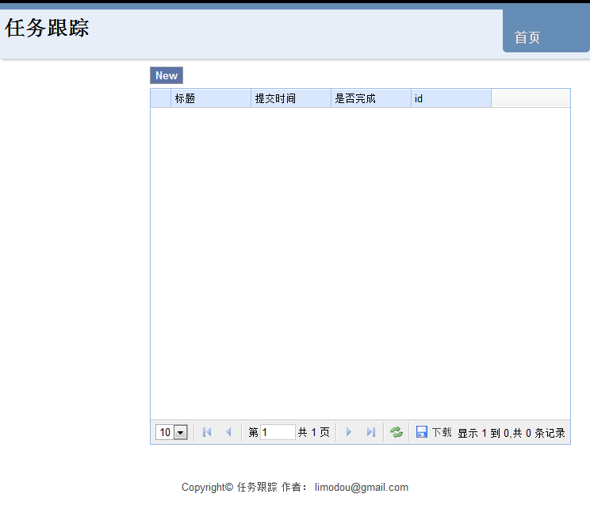

Simple Todo (Uliweb 版本) 之 高级篇¶
本版本是从 http://simple-is-better.com/news/detail-309 来的，并且已经使用Uliweb 实现了一个 基础版本 ，不过 这个基础版本讲述的是最基本的Uliweb的用法，因此叫基础篇。 在这个高级篇中，我希望向大家介绍更加高级一些的内容。其中有些功能要依赖于plugs和 generic的一些功能。
plugs是我在开发时把认为可以复用的一些app发布出来，供大家使用。它收集了象基本的 页面布局，通用的view函数，jquery相关的一些界面代码和控件，以及其它的一些配套 功能。但是在这个教程中只会使用部分功能。plugs本身是需要安装，你可以直接下载源码 进行安装，也可以通过 easy_install plugs 或 pip install plugs 来安装。不过因 为目前plugs还在不断优化中，因此建议直接通过下载源码来安装。现在plugs可以在 http://code.google.com/p/plugs 和 https://github.com/limodou/plugs 都可以找到。
generic在plugs中存在一个app，它提供了封装好的view函数，可以直接使用。类似于django 的generic_view的功能。它提供了class-based的view和function-based的view方法，你可 以根据需要来使用。
同时在uliweb中还提供了generic.py模块，它提供了更底层的view的调用，分别对应于: list, add, edit, view, delete。而plugs中的generic又是使用了generic.py模块的功能 来实现。generic.py的功能我认为非常强大，我会用专门的文档来进行介绍。
构建流程¶
构建初始环境¶
在基础篇中讲过的内容，这里不再缀述。假定目前初始为$project，操作如下:
uliweb makeproject plugs_todo
cd plugs_todo
uliweb makeapp todosettings.ini配置¶
修改apps/settings.ini为以下内容:
[GLOBAL]
DEBUG = True
INSTALLED_APPS = [
'plugs.generic',
'plugs.layout',
'uliweb.contrib.orm',
'todo',
]
[ORM]
CONNECTION = 'sqlite:///database.db'
AUTO_CREATE = False
[I18N]
LOCALE_DIRS = ['$[plugs]']
SUPPORT_LANGUAGES = ['en', 'zh_CN']ORM段中我使用了sqlite数据库，同时关闭自动创建表的选项。在 INSTALLED_APPS 中加入 了'plugs.layout'和'todo'这两个app。由于使用了plugs，它是支持i18n的处理，因此上面 I18N一段就是相关的配置。在这个小网站，我们可以使用英文和中文。
基本布局¶
前面我们看到了，已经加入了 plugs.generic 和 plugs.layout 这两个app，其中 plugs.generic 提供了通用的Model的CRUD(Create Read Update Delete)的处理展示。在非常简单的情况下 可以直接使用它来生成相应的界面。而 plugs.layout 提供了基本的布局。在layout中 的settings.ini中有几个参数可以设置，缺省值为:
[LAYOUT]
COPYRIGHT = _('All rights reversed!')
TITLE = _('Uliweb Plugs Demo')
MENUS = [
('home', _('Home'), '/'),
('admin', _('Admin'), '/user/view'),
('about', _('About'), '/about'),
]让我们修改一下，添加到apps/settings.ini中去:
[LAYOUT]
COPYRIGHT = 'Copyright© 任务跟踪 作者： limodou@gmail.com'
TITLE = '任务跟踪'
MENUS <= [
('home', '首页', '/'),
]这里有一个特别的地方，那就是MENUS <= 它的作用是替换原来的值。因为pyini在处理时， 如果遇到相同名字的两个变量，如果变量是不可变对象，则直接替换，如：str, int等。但 如果值是可变对象，如：list, dict，则会进行合并。因为上面的MENUS是list，所以缺省 情况下会进行合并，而我们的目的是想替换，所以使用 <= 就可以替换了。
为了运行，我们首先要修改一下plugs_todo/apps/todo/views.py，改 为:
#coding=utf-8
from uliweb import expose
@expose('/')
def index():
return {}然后我们在plugs的layout.html的基础上，来创建一个通用的基础模板，如命名为base.html, 内容如下:
{{extend "layout.html"}}
{{block userinfo}}{{end}}因为layout.html中还有用户的信息，但是我们这里并不使用，因此，我们将block userinfo 置为空。
然后在todo/templates下创建index.html，内容为:
{{extend "base.html"}}好，目前差不多了，让我们回到命令行，在plugs_todo目录下运行:
uliweb runserver如果没有错误，可以通过访问 http://localhost:8000 看到如下界面:

创建Todo的Model¶
下面就是创建Todo表的结构。在todo下创建models.py文件，写入以下内容:
#coding=utf-8
from uliweb.orm import *
class Todo(Model):
title = Field(str, verbose_name="标题", max_length=255, required=True)
post_date = Field(datetime.datetime, verbose_name='提交时间', auto_now_add=True)
finished = Field(bool, verbose_name='是否完成')在todo下创建settings.ini，然后输入以下内容:
[MODELS]
todo = 'todo.models.Todo'这样我们就将todo表做成配置化的了。关于配置化，详情可以查看 Uliweb ORM 的文档。
在命令行下运行:
uliweb syncdb来创建表。
处理Todo¶
下面开始写展示Todo列表的代码了，让我们看一下如何使用plugs.generic中的View Class。 编辑 todo/views.py 如下:
#coding=utf-8
from uliweb import expose
from plugs.generic.views import View
from uliweb.i18n import ugettext as _
@expose('/')
class Todo(View):
model = 'todo'
layout = 'base.html'
key_field = 'title'
# add_button_text = _('New')
# pagination = True
# rows = 10
@expose('/')
def list(self):
return View.list(self)可以看到我们从plugs.generic.views中导入了View类，然后从这个类派生了Todo的子类。 View类中已经预定义了象list, view, edit, delete, add等方法。基本的功能，包括展示 已经全部由View来实现，你只要进行必要的配置就可以实现一个非常快速的录入。当然， 在实际的项目中我们可能不会这么简单，但是这至少是一个可以表现复用性的例子。
在Todo中还定义了一些类属性，用于具体的配置。如model对应要处理的表。layout表示整 体要使用的布局文件，这里是base.html。key_field是表示在显示列表时，哪个字段将展 示为相应的查看链接。其它的给注释了，它们显示的都是相应的缺省值。可以看到它还包含 了相应的分页的处理。
上面 _('New') 是i18n(国际化)处理的例子。 _ 是在 from uliweb.i18n import ugettext as _ 中定义的。
改完以后，再运行，结果是这个样子。

这里的代码已经完成了整个的：列表显示，增加，删除，修改，查看的功能。但是它是以 一种预定义的方式来展示的，可能不能满足你的要求，但是作为快速开发会非常方便。
你仍然可以使用更底层一些的generic.py来实现更加个性化的代码。
后记¶
其实在plugs的相应的app中封装了好多的东西。比如flash message，表格的分页处理， 由Model转为Form的机制，下载的处理等。还包括一些ui的处理，如对jquery easyui的封 装等。它们都是构成plugs的基础，我会不断完善它们。